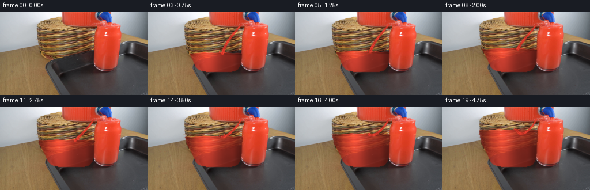
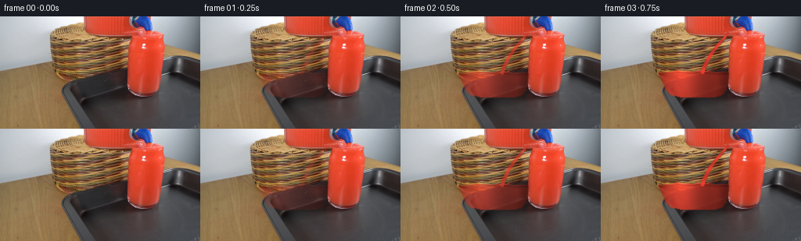
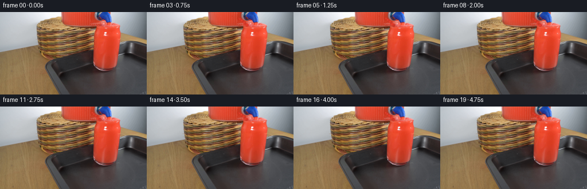
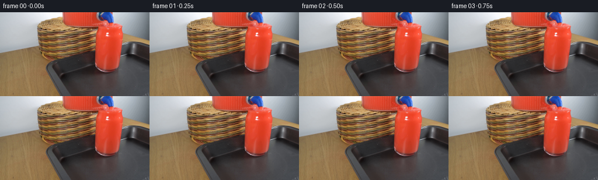
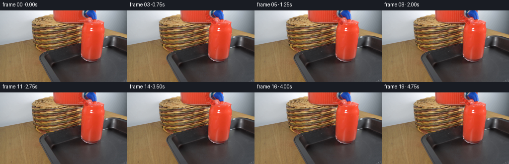
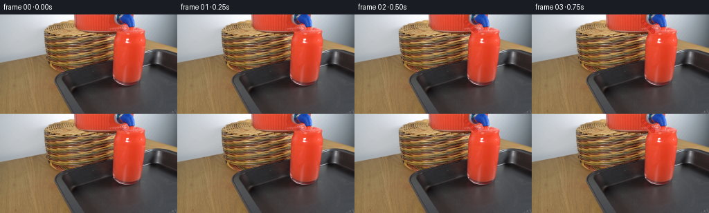
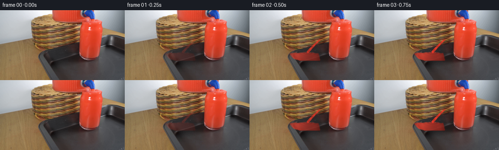

CODING AGENTS AS PIXEL WORLD MODELS
traex/DeepSeek-V4.1-Flash · 0088
点击播放 · 原生 RGB 像素
逐轮保存的候选
回放视频、检查图与代码变化。
每份候选均可单独播放。实际图片检查记录在下方工具轨迹中。
候选 01播放与检查图
点击播放 · 原生 RGB 像素


展开代码变化
--- 上一保存版本
+++ 本次保存版本
@@ -0,0 +1,227 @@
+from pathlib import Path
+
+import cv2
+import numpy as np
+from PIL import Image
+
+import artifact_io
+
+
+WIDTH, HEIGHT = 256, 144
+FRAME_COUNT = 20
+FPS = 4
+
+
+def smoothstep(edge0, edge1, value):
+ t = np.clip((value - edge0) / (edge1 - edge0), 0.0, 1.0)
+ return t * t * (3.0 - 2.0 * t)
+
+
+def glass_mask():
+ """Soft mask for the large drinking glass left of the dispenser."""
+ mask = np.zeros((HEIGHT, WIDTH), np.float32)
+ rows = [
+ (22, 67, 163),
+ (27, 65, 164),
+ (34, 64, 164),
+ (44, 64, 164),
+ (56, 66, 164),
+ (66, 69, 163),
+ (76, 75, 163),
+ (86, 80, 162),
+ (94, 83, 160),
+ (100, 89, 155),
+ (103, 103, 145),
+ ]
+ polygon = np.array([(x, y) for y, x0, x1 in rows for x in (x0, x1)], np.int32)
+ left = np.array([(x0, y) for y, x0, _ in rows], np.int32)
+ right = np.array([(x1, y) for y, _, x1 in rows], np.int32)
+ polygon = np.vstack([left, right[::-1]])
+ cv2.fillPoly(mask, [polygon], 1.0)
+ mask = cv2.GaussianBlur(mask, (3, 3), 0.55)
+ return np.clip(mask, 0.0, 1.0)
+
+
+def liquid_surface(frame_index):
+ """The surface descends from the first pour to a nearly full glass."""
+ t = frame_index / (FRAME_COUNT - 1)
+ level = 72.0 - 34.0 * (0.42 * t + 0.58 * t * t)
+ wave = 0.75 * np.sin(t * 2.0 * np.pi * 1.15)
+ return level + wave
+
+
+def surface_curve(y_surface):
+ x = np.arange(WIDTH, dtype=np.float32)
+ center = 116.0
+ half_width = 49.0
+ normalized = np.clip((x - center) / half_width, -1.0, 1.0)
+ # A shallow ellipse: the liquid is lower at the center and climbs at the rim.
+ curve = y_surface + 2.0 * (normalized * normalized - 0.35)
+ curve += 0.55 * np.sin((x - 72.0) * 0.19) + 0.25 * np.sin((x - 72.0) * 0.43)
+ return curve
+
+
+def build_liquid(base, mask, y_surface, frame_index):
+ """Tint the interior with a luminous liquid while retaining glass optics."""
+ yy, xx = np.mgrid[0:HEIGHT, 0:WIDTH].astype(np.float32)
+ curve = surface_curve(y_surface)[None, :]
+ fill = smoothstep(-0.7, 1.4, yy - curve) * mask
+
+ src = base.astype(np.float32)
+ luminance = src @ np.array([0.299, 0.587, 0.114], np.float32)
+ sat = src.max(axis=2) - src.min(axis=2)
+
+ # Lighting follows the curved glass: a bright left shoulder and darker rim.
+ xn = np.clip((xx - 69.0) / 92.0, 0.0, 1.0)
+ depth = np.clip((yy - curve) / 42.0, 0.0, 1.0)
+ shoulder = np.exp(-((xx - 103.0) / 21.0) ** 2)
+ rim_dark = 0.72 + 0.28 * smoothstep(0.0, 0.18, xn) * smoothstep(0.0, 0.18, 1.0 - xn)
+ vertical = 1.02 - 0.17 * depth
+ brightness = (0.78 + 0.34 * shoulder) * rim_dark * vertical
+
+ red = np.empty_like(src)
+ red[..., 0] = (211.0 + 20.0 * shoulder) * brightness
+ red[..., 1] = (55.0 + 13.0 * shoulder) * brightness
+ red[..., 2] = (40.0 + 9.0 * shoulder) * brightness
+
+ # Refracted tray and glass contours make the lower liquid vary naturally.
+ texture = cv2.GaussianBlur(luminance, (5, 5), 1.1) / 255.0
+ red *= 0.86 + 0.26 * texture[..., None]
+ red += np.array([18.0, 2.0, 1.5], np.float32) * shoulder[..., None]
+
+ # Meniscus: a thin lighter edge and a subtle dark line below it.
+ edge = np.exp(-((yy - curve - 0.2) / 1.15) ** 2)
+ below_edge = np.exp(-((yy - curve - 2.3) / 1.55) ** 2)
+ red += edge[..., None] * np.array([28.0, 7.0, 4.0], np.float32)
+ red -= below_edge[..., None] * np.array([28.0, 10.0, 8.0], np.float32)
+
+ # Preserve the strongest source highlights as elongated glass reflections.
+ highlight = smoothstep(155.0, 235.0, luminance) * smoothstep(8.0, 28.0, sat)
+ highlight *= mask
+ blend = fill[..., None] * 0.82
+ result = src * (1.0 - blend) + red * blend
+ result = result * (1.0 - 0.58 * highlight[..., None]) + src * (0.58 * highlight[..., None])
+
+ # Fine, slow ripples keep the liquid alive without visible frame stepping.
+ phase = frame_index * 0.78
+ ripple = (
+ np.sin((xx - 102.0) * 0.24 + phase)
+ * np.exp(-((yy - curve) / 8.0) ** 2)
+ * 2.3
+ * fill
+ )
+ result += ripple[..., None] * np.array([0.9, -0.15, -0.15], np.float32)
+ return np.clip(result, 0, 255)
+
+
+def bezier(points, count=120):
+ points = [np.asarray(point, np.float32) for point in points]
+ t = np.linspace(0.0, 1.0, count, dtype=np.float32)[:, None]
+ while len(points) > 1:
+ points = [
+ (1.0 - t) * points[index] + t * points[index + 1]
+ for index in range(len(points) - 1)
+ ]
+ return points[0]
+
+
+def draw_stream(image, y_surface, frame_index):
+ """Draw a tapered, anti-aliased pour from the dispenser lip into the glass."""
+ t = frame_index / (FRAME_COUNT - 1)
+ start = np.array([162.0, 21.0], np.float32)
+ impact_x = 129.0 + 1.2 * np.sin(t * 4.0)
+ impact = np.array([impact_x, y_surface + 1.2], np.float32)
+ control1 = np.array([156.0, 30.0 + 5.0 * t], np.float32)
+ control2 = np.array([137.0, 44.0 + 12.0 * t], np.float32)
+ curve = bezier([start, control1, control2, impact], 180)
+
+ # Width grows slightly as the falling liquid accelerates.
+ s = np.linspace(0.0, 1.0, len(curve), dtype=np.float32)
+ radius = 1.05 + 1.35 * s
+ radius *= 1.0 + 0.055 * np.sin(frame_index * 1.7 + s * 19.0)
+
+ yy, xx = np.mgrid[0:HEIGHT, 0:WIDTH].astype(np.float32)
+ min_x = max(0, int(curve[:, 0].min()) - 5)
+ max_x = min(WIDTH, int(curve[:, 0].max()) + 6)
+ min_y = max(0, int(curve[:, 1].min()) - 4)
+ max_y = min(HEIGHT, int(curve[:, 1].max()) + 7)
+ local_y, local_x = yy[min_y:max_y, min_x:max_x], xx[min_y:max_y, min_x:max_x]
+ distance = np.full(local_x.shape, 100.0, np.float32)
+ nearest_s = np.zeros(local_x.shape, np.float32)
+ for index, point in enumerate(curve):
+ d = np.hypot(local_x - point[0], local_y - point[1])
+ take = d < distance
+ distance[take] = d[take]
+ nearest_s[take] = s[index]
+
+ local_radius = 1.05 + 1.35 * nearest_s
+ alpha = np.clip(local_radius + 0.7 - distance, 0.0, 1.0)
+ # Soften only the outer edge while leaving a crisp liquid core.
+ alpha = cv2.GaussianBlur(alpha, (3, 3), 0.35)
+ edge_light = np.exp(-((distance - local_radius * 0.45) / 0.65) ** 2)
+
+ stream = np.empty((max_y - min_y, max_x - min_x, 3), np.float32)
+ stream[..., 0] = 211.0 + 25.0 * edge_light
+ stream[..., 1] = 49.0 + 18.0 * edge_light
+ stream[..., 2] = 37.0 + 12.0 * edge_light
+ stream *= (0.94 + 0.08 * np.sin(nearest_s * 23.0 + frame_index * 1.4))[..., None]
+
+ region = image[min_y:max_y, min_x:max_x]
+ image[min_y:max_y, min_x:max_x] = (
+ region * (1.0 - 0.96 * alpha[..., None]) + stream * (0.96 * alpha[..., None])
+ )
+
+ # Impact crown and a few small droplets.
+ cx, cy = impact
+ crown_x = np.arange(max(0, int(cx) - 9), min(WIDTH, int(cx) + 10), dtype=np.float32)
+ for index, x in enumerate(crown_x):
+ wave = 1.6 * np.exp(-((x - cx) / 5.3) ** 2)
+ y = int(round(cy - 1.3 + 0.6 * np.sin(index * 0.8 + frame_index)))
+ if 0 <= y < HEIGHT:
+ strength = 0.42 + 0.32 * np.exp(-((x - cx) / 4.0) ** 2)
+ image[y, int(x)] = image[y, int(x)] * (1.0 - strength) + np.array([235, 75, 55]) * strength
+
+ droplet_offsets = [(-5.0, -3.0), (4.0, -4.0), (7.0, -2.0), (-8.0, -1.0)]
+ for dx, dy in droplet_offsets:
+ px = int(round(cx + dx + 0.6 * np.sin(frame_index + dx)))
+ py = int(round(cy + dy))
+ if 0 <= px < WIDTH and 0 <= py < HEIGHT:
+ image[py, px] = image[py, px] * 0.2 + np.array([238, 70, 51]) * 0.8
+
+ return image
+
+
+def make_frame(base, frame_index):
+ if frame_index == 0:
+ return base.copy()
+
+ mask = glass_mask()
+ y_surface = liquid_surface(frame_index)
+ image = build_liquid(base, mask, y_surface, frame_index)
+ image = draw_stream(image, y_surface, frame_index)
+
+ # The liquid appears progressively, avoiding a hard change from frame zero.
+ reveal = float(smoothstep(0.0, 3.0, frame_index))
+ image = base * (1.0 - reveal) + image * reveal
+
+ # Gentle exposure breathing from the moving liquid; camera and scene remain locked.
+ glow = 0.004 * np.sin(frame_index * 0.62)
+ image = np.clip(image * (1.0 + glow), 0, 255)
+ return np.rint(image).astype(np.uint8)
+
+
+def main():
+ case_dir = Path(__file__).resolve().parent
+ base = np.asarray(Image.open(case_dir / "first_frame.png").convert("RGB"), dtype=np.uint8)
+ assert base.shape == (HEIGHT, WIDTH, 3)
+
+ frames = np.empty((FRAME_COUNT, HEIGHT, WIDTH, 3), dtype=np.uint8)
+ frames[0] = base
+ for index in range(1, FRAME_COUNT):
+ frames[index] = make_frame(base.astype(np.float32), index)
+
+ artifact_io.save(frames, case_dir)
+
+
+if __name__ == "__main__":
+ main()
候选 02播放与检查图
点击播放 · 原生 RGB 像素


展开代码变化
--- 上一保存版本
+++ 本次保存版本
@@ -17,101 +17,83 @@
return t * t * (3.0 - 2.0 * t)
-def glass_mask():
- """Soft mask for the large drinking glass left of the dispenser."""
+def receiving_glass_mask():
+ """Interior silhouette of the red-filled drinking glass at frame right."""
+ outline = np.array(
+ [
+ (165, 17), (207, 17), (210, 23), (210, 45), (209, 58),
+ (208, 66), (206, 74), (205, 84), (203, 93), (199, 99),
+ (190, 102), (179, 102), (171, 99), (166, 93), (164, 84),
+ (163, 74), (162, 64), (162, 54), (163, 43), (164, 31),
+ ],
+ np.int32,
+ )
mask = np.zeros((HEIGHT, WIDTH), np.float32)
- rows = [
- (22, 67, 163),
- (27, 65, 164),
- (34, 64, 164),
- (44, 64, 164),
- (56, 66, 164),
- (66, 69, 163),
- (76, 75, 163),
- (86, 80, 162),
- (94, 83, 160),
- (100, 89, 155),
- (103, 103, 145),
- ]
- polygon = np.array([(x, y) for y, x0, x1 in rows for x in (x0, x1)], np.int32)
- left = np.array([(x0, y) for y, x0, _ in rows], np.int32)
- right = np.array([(x1, y) for y, _, x1 in rows], np.int32)
- polygon = np.vstack([left, right[::-1]])
- cv2.fillPoly(mask, [polygon], 1.0)
+ cv2.fillPoly(mask, [outline], 1.0)
mask = cv2.GaussianBlur(mask, (3, 3), 0.55)
return np.clip(mask, 0.0, 1.0)
-def liquid_surface(frame_index):
- """The surface descends from the first pour to a nearly full glass."""
- t = frame_index / (FRAME_COUNT - 1)
- level = 72.0 - 34.0 * (0.42 * t + 0.58 * t * t)
- wave = 0.75 * np.sin(t * 2.0 * np.pi * 1.15)
- return level + wave
+def source_red_mask(base):
+ r, g, b = base[..., 0], base[..., 1], base[..., 2]
+ red = (r > 88.0) & (r > g * 1.22) & (r > b * 1.18)
+ red = cv2.morphologyEx(red.astype(np.uint8), cv2.MORPH_CLOSE, np.ones((3, 3), np.uint8))
+ return cv2.GaussianBlur(red.astype(np.float32), (3, 3), 0.5)
-def surface_curve(y_surface):
+def surface_curve(frame_index):
x = np.arange(WIDTH, dtype=np.float32)
- center = 116.0
- half_width = 49.0
- normalized = np.clip((x - center) / half_width, -1.0, 1.0)
- # A shallow ellipse: the liquid is lower at the center and climbs at the rim.
- curve = y_surface + 2.0 * (normalized * normalized - 0.35)
- curve += 0.55 * np.sin((x - 72.0) * 0.19) + 0.25 * np.sin((x - 72.0) * 0.43)
- return curve
+ t = frame_index / (FRAME_COUNT - 1)
+ level = 22.4 - 1.15 * (0.35 * t + 0.65 * t * t)
+ impact_dip = 1.15 * np.exp(-((x - 174.0) / 4.6) ** 2)
+ ripples = (
+ 0.42 * np.sin((x - 166.0) * 0.42 + frame_index * 0.62)
+ + 0.20 * np.sin((x - 174.0) * 0.83 - frame_index * 0.95)
+ )
+ return level + impact_dip + ripples
-def build_liquid(base, mask, y_surface, frame_index):
- """Tint the interior with a luminous liquid while retaining glass optics."""
+def add_liquid_motion(image, glass, liquid, frame_index):
yy, xx = np.mgrid[0:HEIGHT, 0:WIDTH].astype(np.float32)
- curve = surface_curve(y_surface)[None, :]
- fill = smoothstep(-0.7, 1.4, yy - curve) * mask
+ curve = surface_curve(frame_index)[None, :]
+ t = frame_index / (FRAME_COUNT - 1)
- src = base.astype(np.float32)
- luminance = src @ np.array([0.299, 0.587, 0.114], np.float32)
- sat = src.max(axis=2) - src.min(axis=2)
+ # Concentric ripples spread from the pour impact and fade into the body.
+ distance = np.hypot(xx - 174.0, (yy - curve) * 2.15)
+ phase = distance * 0.72 - frame_index * 1.10
+ envelope = np.exp(-distance / 31.0) * np.exp(-((yy - curve) / 8.5) ** 2)
+ ripple = np.sin(phase) * envelope * glass * liquid
+ image += ripple[..., None] * np.array([7.0, 1.2, 0.8], np.float32)
- # Lighting follows the curved glass: a bright left shoulder and darker rim.
- xn = np.clip((xx - 69.0) / 92.0, 0.0, 1.0)
- depth = np.clip((yy - curve) / 42.0, 0.0, 1.0)
- shoulder = np.exp(-((xx - 103.0) / 21.0) ** 2)
- rim_dark = 0.72 + 0.28 * smoothstep(0.0, 0.18, xn) * smoothstep(0.0, 0.18, 1.0 - xn)
- vertical = 1.02 - 0.17 * depth
- brightness = (0.78 + 0.34 * shoulder) * rim_dark * vertical
+ # A moving meniscus catches the room light at the liquid surface.
+ meniscus = np.exp(-((yy - curve) / 0.95) ** 2) * glass
+ image += meniscus[..., None] * np.array([13.0, 3.2, 2.0], np.float32)
+ dark_edge = np.exp(-((yy - curve - 2.0) / 1.25) ** 2) * glass
+ image -= dark_edge[..., None] * np.array([9.0, 3.2, 2.4], np.float32)
- red = np.empty_like(src)
- red[..., 0] = (211.0 + 20.0 * shoulder) * brightness
- red[..., 1] = (55.0 + 13.0 * shoulder) * brightness
- red[..., 2] = (40.0 + 9.0 * shoulder) * brightness
+ # The impact point forms a small bright crown whose width breathes with the pour.
+ crown_width = 3.4 + 0.55 * np.sin(frame_index * 0.9)
+ crown = np.exp(-((xx - 174.0) / crown_width) ** 2) * np.exp(
+ -((yy - curve + 0.6) / 1.4) ** 2
+ )
+ crown *= glass * smoothstep(0.0, 2.0, frame_index)
+ image += crown[..., None] * np.array([24.0, 5.0, 3.0], np.float32)
- # Refracted tray and glass contours make the lower liquid vary naturally.
- texture = cv2.GaussianBlur(luminance, (5, 5), 1.1) / 255.0
- red *= 0.86 + 0.26 * texture[..., None]
- red += np.array([18.0, 2.0, 1.5], np.float32) * shoulder[..., None]
+ # Slow vertical streaks are the existing glass reflections, gently displaced.
+ highlight = smoothstep(165.0, 245.0, image.mean(axis=2)) * glass
+ shimmer = 1.0 + 0.035 * np.sin(yy * 0.20 + xx * 0.08 + frame_index * 0.85)
+ image = image * (1.0 + (shimmer - 1.0)[..., None] * highlight[..., None])
- # Meniscus: a thin lighter edge and a subtle dark line below it.
- edge = np.exp(-((yy - curve - 0.2) / 1.15) ** 2)
- below_edge = np.exp(-((yy - curve - 2.3) / 1.55) ** 2)
- red += edge[..., None] * np.array([28.0, 7.0, 4.0], np.float32)
- red -= below_edge[..., None] * np.array([28.0, 10.0, 8.0], np.float32)
-
- # Preserve the strongest source highlights as elongated glass reflections.
- highlight = smoothstep(155.0, 235.0, luminance) * smoothstep(8.0, 28.0, sat)
- highlight *= mask
- blend = fill[..., None] * 0.82
- result = src * (1.0 - blend) + red * blend
- result = result * (1.0 - 0.58 * highlight[..., None]) + src * (0.58 * highlight[..., None])
-
- # Fine, slow ripples keep the liquid alive without visible frame stepping.
- phase = frame_index * 0.78
- ripple = (
- np.sin((xx - 102.0) * 0.24 + phase)
- * np.exp(-((yy - curve) / 8.0) ** 2)
- * 2.3
- * fill
- )
- result += ripple[..., None] * np.array([0.9, -0.15, -0.15], np.float32)
- return np.clip(result, 0, 255)
+ # A few tiny bubbles drift upward in the disturbed liquid.
+ bubble_specs = [(169, 54, 0.4), (184, 69, 1.1), (196, 48, 1.8), (178, 83, 2.5)]
+ for bx, by, offset in bubble_specs:
+ travel = 7.0 * ((t * 1.8 + offset) % 1.0)
+ px = int(round(bx + 0.7 * np.sin(frame_index * 0.55 + offset)))
+ py = int(round(by - travel))
+ if 0 <= px < WIDTH and 0 <= py < HEIGHT:
+ strength = 0.28 * glass[py, px] * liquid[py, px]
+ image[py, px] = image[py, px] * (1.0 - strength) + np.array([235, 104, 82]) * strength
+ return image
def bezier(points, count=120):
@@ -125,69 +107,55 @@
return points[0]
-def draw_stream(image, y_surface, frame_index):
- """Draw a tapered, anti-aliased pour from the dispenser lip into the glass."""
+def draw_stream(image, frame_index):
+ """Draw the short pour from the dispenser lip into the full glass."""
t = frame_index / (FRAME_COUNT - 1)
- start = np.array([162.0, 21.0], np.float32)
- impact_x = 129.0 + 1.2 * np.sin(t * 4.0)
- impact = np.array([impact_x, y_surface + 1.2], np.float32)
- control1 = np.array([156.0, 30.0 + 5.0 * t], np.float32)
- control2 = np.array([137.0, 44.0 + 12.0 * t], np.float32)
- curve = bezier([start, control1, control2, impact], 180)
-
- # Width grows slightly as the falling liquid accelerates.
- s = np.linspace(0.0, 1.0, len(curve), dtype=np.float32)
- radius = 1.05 + 1.35 * s
- radius *= 1.0 + 0.055 * np.sin(frame_index * 1.7 + s * 19.0)
+ surface = surface_curve(frame_index)
+ impact = np.array([174.0 + 0.45 * np.sin(t * 7.0), surface[174] - 0.3], np.float32)
+ start = np.array([160.5, 10.5], np.float32)
+ control1 = np.array([162.5, 12.5], np.float32)
+ control2 = np.array([169.0, 16.5], np.float32)
+ curve = bezier([start, control1, control2, impact], 110)
yy, xx = np.mgrid[0:HEIGHT, 0:WIDTH].astype(np.float32)
min_x = max(0, int(curve[:, 0].min()) - 5)
max_x = min(WIDTH, int(curve[:, 0].max()) + 6)
min_y = max(0, int(curve[:, 1].min()) - 4)
- max_y = min(HEIGHT, int(curve[:, 1].max()) + 7)
+ max_y = min(HEIGHT, int(curve[:, 1].max()) + 6)
local_y, local_x = yy[min_y:max_y, min_x:max_x], xx[min_y:max_y, min_x:max_x]
distance = np.full(local_x.shape, 100.0, np.float32)
- nearest_s = np.zeros(local_x.shape, np.float32)
+ nearest = np.zeros(local_x.shape, np.float32)
+ s = np.linspace(0.0, 1.0, len(curve), dtype=np.float32)
for index, point in enumerate(curve):
d = np.hypot(local_x - point[0], local_y - point[1])
take = d < distance
distance[take] = d[take]
- nearest_s[take] = s[index]
+ nearest[take] = s[index]
- local_radius = 1.05 + 1.35 * nearest_s
- alpha = np.clip(local_radius + 0.7 - distance, 0.0, 1.0)
- # Soften only the outer edge while leaving a crisp liquid core.
- alpha = cv2.GaussianBlur(alpha, (3, 3), 0.35)
- edge_light = np.exp(-((distance - local_radius * 0.45) / 0.65) ** 2)
+ radius = 1.15 + 1.15 * nearest
+ radius *= 1.0 + 0.04 * np.sin(frame_index * 1.5 + nearest * 22.0)
+ alpha = np.clip(radius + 0.65 - distance, 0.0, 1.0)
+ alpha = cv2.GaussianBlur(alpha, (3, 3), 0.32)
+ edge = np.exp(-((distance - radius * 0.45) / 0.55) ** 2)
stream = np.empty((max_y - min_y, max_x - min_x, 3), np.float32)
- stream[..., 0] = 211.0 + 25.0 * edge_light
- stream[..., 1] = 49.0 + 18.0 * edge_light
- stream[..., 2] = 37.0 + 12.0 * edge_light
- stream *= (0.94 + 0.08 * np.sin(nearest_s * 23.0 + frame_index * 1.4))[..., None]
+ stream[..., 0] = 214.0 + 24.0 * edge
+ stream[..., 1] = 50.0 + 15.0 * edge
+ stream[..., 2] = 36.0 + 10.0 * edge
+ stream *= (0.95 + 0.06 * np.sin(nearest * 24.0 + frame_index * 1.25))[..., None]
region = image[min_y:max_y, min_x:max_x]
- image[min_y:max_y, min_x:max_x] = (
- region * (1.0 - 0.96 * alpha[..., None]) + stream * (0.96 * alpha[..., None])
+ image[min_y:max_y, min_x:max_x] = region * (1.0 - 0.96 * alpha[..., None]) + stream * (
+ 0.96 * alpha[..., None]
)
- # Impact crown and a few small droplets.
- cx, cy = impact
- crown_x = np.arange(max(0, int(cx) - 9), min(WIDTH, int(cx) + 10), dtype=np.float32)
- for index, x in enumerate(crown_x):
- wave = 1.6 * np.exp(-((x - cx) / 5.3) ** 2)
- y = int(round(cy - 1.3 + 0.6 * np.sin(index * 0.8 + frame_index)))
- if 0 <= y < HEIGHT:
- strength = 0.42 + 0.32 * np.exp(-((x - cx) / 4.0) ** 2)
- image[y, int(x)] = image[y, int(x)] * (1.0 - strength) + np.array([235, 75, 55]) * strength
-
- droplet_offsets = [(-5.0, -3.0), (4.0, -4.0), (7.0, -2.0), (-8.0, -1.0)]
- for dx, dy in droplet_offsets:
- px = int(round(cx + dx + 0.6 * np.sin(frame_index + dx)))
- py = int(round(cy + dy))
+ # The falling stream sheds a few small droplets near the impact.
+ for dx, dy in [(-4.5, -2.0), (4.0, -3.5), (6.0, 1.0), (-6.0, 2.0)]:
+ px = int(round(impact[0] + dx + 0.5 * np.sin(frame_index + dx)))
+ py = int(round(impact[1] + dy))
if 0 <= px < WIDTH and 0 <= py < HEIGHT:
- image[py, px] = image[py, px] * 0.2 + np.array([238, 70, 51]) * 0.8
-
+ strength = 0.62 if (frame_index + int(abs(dx))) % 3 else 0.35
+ image[py, px] = image[py, px] * (1.0 - strength) + np.array([238, 67, 48]) * strength
return image
@@ -195,19 +163,16 @@
if frame_index == 0:
return base.copy()
- mask = glass_mask()
- y_surface = liquid_surface(frame_index)
- image = build_liquid(base, mask, y_surface, frame_index)
- image = draw_stream(image, y_surface, frame_index)
+ glass = receiving_glass_mask()
+ liquid = source_red_mask(base)
+ image = base.astype(np.float32).copy()
+ image = add_liquid_motion(image, glass, liquid, frame_index)
+ image = draw_stream(image, frame_index)
- # The liquid appears progressively, avoiding a hard change from frame zero.
- reveal = float(smoothstep(0.0, 3.0, frame_index))
- image = base * (1.0 - reveal) + image * reveal
-
- # Gentle exposure breathing from the moving liquid; camera and scene remain locked.
- glow = 0.004 * np.sin(frame_index * 0.62)
- image = np.clip(image * (1.0 + glow), 0, 255)
- return np.rint(image).astype(np.uint8)
+ # Keep the first transition gentle while the stream establishes itself.
+ reveal = float(smoothstep(0.2, 2.5, frame_index))
+ image = base.astype(np.float32) * (1.0 - reveal) + image * reveal
+ return np.rint(np.clip(image, 0.0, 255.0)).astype(np.uint8)
def main():
@@ -218,7 +183,7 @@
frames = np.empty((FRAME_COUNT, HEIGHT, WIDTH, 3), dtype=np.uint8)
frames[0] = base
for index in range(1, FRAME_COUNT):
- frames[index] = make_frame(base.astype(np.float32), index)
+ frames[index] = make_frame(base, index)
artifact_io.save(frames, case_dir)
候选 03播放与检查图
点击播放 · 原生 RGB 像素


展开代码变化
--- 上一保存版本
+++ 本次保存版本
@@ -44,11 +44,11 @@
def surface_curve(frame_index):
x = np.arange(WIDTH, dtype=np.float32)
t = frame_index / (FRAME_COUNT - 1)
- level = 22.4 - 1.15 * (0.35 * t + 0.65 * t * t)
- impact_dip = 1.15 * np.exp(-((x - 174.0) / 4.6) ** 2)
+ level = 23.6 - 3.1 * (0.30 * t + 0.70 * t * t)
+ impact_dip = 2.0 * np.exp(-((x - 174.0) / 5.4) ** 2)
ripples = (
- 0.42 * np.sin((x - 166.0) * 0.42 + frame_index * 0.62)
- + 0.20 * np.sin((x - 174.0) * 0.83 - frame_index * 0.95)
+ 0.72 * np.sin((x - 166.0) * 0.42 + frame_index * 0.62)
+ + 0.34 * np.sin((x - 174.0) * 0.83 - frame_index * 0.95)
)
return level + impact_dip + ripples
@@ -61,23 +61,23 @@
# Concentric ripples spread from the pour impact and fade into the body.
distance = np.hypot(xx - 174.0, (yy - curve) * 2.15)
phase = distance * 0.72 - frame_index * 1.10
- envelope = np.exp(-distance / 31.0) * np.exp(-((yy - curve) / 8.5) ** 2)
+ envelope = np.exp(-distance / 34.0) * np.exp(-((yy - curve) / 10.0) ** 2)
ripple = np.sin(phase) * envelope * glass * liquid
- image += ripple[..., None] * np.array([7.0, 1.2, 0.8], np.float32)
+ image += ripple[..., None] * np.array([12.0, 2.5, 1.6], np.float32)
# A moving meniscus catches the room light at the liquid surface.
meniscus = np.exp(-((yy - curve) / 0.95) ** 2) * glass
- image += meniscus[..., None] * np.array([13.0, 3.2, 2.0], np.float32)
+ image += meniscus[..., None] * np.array([17.0, 4.0, 2.5], np.float32)
dark_edge = np.exp(-((yy - curve - 2.0) / 1.25) ** 2) * glass
- image -= dark_edge[..., None] * np.array([9.0, 3.2, 2.4], np.float32)
+ image -= dark_edge[..., None] * np.array([11.0, 3.8, 2.8], np.float32)
# The impact point forms a small bright crown whose width breathes with the pour.
- crown_width = 3.4 + 0.55 * np.sin(frame_index * 0.9)
+ crown_width = 4.8 + 0.75 * np.sin(frame_index * 0.9)
crown = np.exp(-((xx - 174.0) / crown_width) ** 2) * np.exp(
-((yy - curve + 0.6) / 1.4) ** 2
)
crown *= glass * smoothstep(0.0, 2.0, frame_index)
- image += crown[..., None] * np.array([24.0, 5.0, 3.0], np.float32)
+ image += crown[..., None] * np.array([31.0, 7.0, 4.0], np.float32)
# Slow vertical streaks are the existing glass reflections, gently displaced.
highlight = smoothstep(165.0, 245.0, image.mean(axis=2)) * glass
@@ -112,9 +112,9 @@
t = frame_index / (FRAME_COUNT - 1)
surface = surface_curve(frame_index)
impact = np.array([174.0 + 0.45 * np.sin(t * 7.0), surface[174] - 0.3], np.float32)
- start = np.array([160.5, 10.5], np.float32)
- control1 = np.array([162.5, 12.5], np.float32)
- control2 = np.array([169.0, 16.5], np.float32)
+ start = np.array([158.5, 7.0], np.float32)
+ control1 = np.array([160.5, 10.5], np.float32)
+ control2 = np.array([167.5, 16.5], np.float32)
curve = bezier([start, control1, control2, impact], 110)
yy, xx = np.mgrid[0:HEIGHT, 0:WIDTH].astype(np.float32)
@@ -132,17 +132,17 @@
distance[take] = d[take]
nearest[take] = s[index]
- radius = 1.15 + 1.15 * nearest
- radius *= 1.0 + 0.04 * np.sin(frame_index * 1.5 + nearest * 22.0)
- alpha = np.clip(radius + 0.65 - distance, 0.0, 1.0)
- alpha = cv2.GaussianBlur(alpha, (3, 3), 0.32)
+ radius = 1.35 + 1.45 * nearest
+ radius *= 1.0 + 0.065 * np.sin(frame_index * 1.5 + nearest * 22.0)
+ alpha = np.clip(radius + 0.8 - distance, 0.0, 1.0)
+ alpha = cv2.GaussianBlur(alpha, (3, 3), 0.38)
edge = np.exp(-((distance - radius * 0.45) / 0.55) ** 2)
stream = np.empty((max_y - min_y, max_x - min_x, 3), np.float32)
stream[..., 0] = 214.0 + 24.0 * edge
stream[..., 1] = 50.0 + 15.0 * edge
stream[..., 2] = 36.0 + 10.0 * edge
- stream *= (0.95 + 0.06 * np.sin(nearest * 24.0 + frame_index * 1.25))[..., None]
+ stream *= (0.92 + 0.10 * np.sin(nearest * 24.0 + frame_index * 1.25))[..., None]
region = image[min_y:max_y, min_x:max_x]
image[min_y:max_y, min_x:max_x] = region * (1.0 - 0.96 * alpha[..., None]) + stream * (
候选 04播放与检查图
点击播放 · 原生 RGB 像素
展开代码变化
--- 上一保存版本
+++ 本次保存版本
@@ -18,13 +18,11 @@
def receiving_glass_mask():
- """Interior silhouette of the red-filled drinking glass at frame right."""
+ """Interior of the clear drinking glass standing on the baking tray."""
outline = np.array(
[
- (165, 17), (207, 17), (210, 23), (210, 45), (209, 58),
- (208, 66), (206, 74), (205, 84), (203, 93), (199, 99),
- (190, 102), (179, 102), (171, 99), (166, 93), (164, 84),
- (163, 74), (162, 64), (162, 54), (163, 43), (164, 31),
+ (79, 73), (117, 71), (133, 75), (140, 84), (144, 96),
+ (146, 104), (103, 104), (87, 99), (80, 90), (78, 82),
],
np.int32,
)
@@ -34,65 +32,78 @@
return np.clip(mask, 0.0, 1.0)
-def source_red_mask(base):
- r, g, b = base[..., 0], base[..., 1], base[..., 2]
- red = (r > 88.0) & (r > g * 1.22) & (r > b * 1.18)
- red = cv2.morphologyEx(red.astype(np.uint8), cv2.MORPH_CLOSE, np.ones((3, 3), np.uint8))
- return cv2.GaussianBlur(red.astype(np.float32), (3, 3), 0.5)
+def surface_level(frame_index):
+ t = frame_index / (FRAME_COUNT - 1)
+ return 88.0 - 10.0 * (0.38 * t + 0.62 * t * t)
def surface_curve(frame_index):
x = np.arange(WIDTH, dtype=np.float32)
- t = frame_index / (FRAME_COUNT - 1)
- level = 23.6 - 3.1 * (0.30 * t + 0.70 * t * t)
- impact_dip = 2.0 * np.exp(-((x - 174.0) / 5.4) ** 2)
- ripples = (
- 0.72 * np.sin((x - 166.0) * 0.42 + frame_index * 0.62)
- + 0.34 * np.sin((x - 174.0) * 0.83 - frame_index * 0.95)
- )
- return level + impact_dip + ripples
+ level = surface_level(frame_index)
+ center = 112.0
+ half_width = 34.0
+ normalized = np.clip((x - center) / half_width, -1.0, 1.0)
+ curve = level + 2.0 * (normalized * normalized - 0.45)
+ curve += 0.42 * np.sin((x - 80.0) * 0.33 + frame_index * 0.58)
+ curve += 0.22 * np.sin((x - 112.0) * 0.71 - frame_index * 0.82)
+ curve -= 1.0 * np.exp(-((x - 119.0) / 4.8) ** 2)
+ return curve
-def add_liquid_motion(image, glass, liquid, frame_index):
+def add_liquid(image, glass, frame_index):
yy, xx = np.mgrid[0:HEIGHT, 0:WIDTH].astype(np.float32)
curve = surface_curve(frame_index)[None, :]
t = frame_index / (FRAME_COUNT - 1)
- # Concentric ripples spread from the pour impact and fade into the body.
- distance = np.hypot(xx - 174.0, (yy - curve) * 2.15)
- phase = distance * 0.72 - frame_index * 1.10
- envelope = np.exp(-distance / 34.0) * np.exp(-((yy - curve) / 10.0) ** 2)
- ripple = np.sin(phase) * envelope * glass * liquid
- image += ripple[..., None] * np.array([12.0, 2.5, 1.6], np.float32)
+ # Preserve the scene's lighting while introducing a clear red liquid body.
+ below = smoothstep(-0.6, 1.6, yy - curve)
+ fill = below * glass
+ luminance = image @ np.array([0.299, 0.587, 0.114], np.float32)
+ texture = cv2.GaussianBlur(luminance, (5, 5), 1.1) / 255.0
+ depth = np.clip((yy - curve) / 27.0, 0.0, 1.0)
+ shoulder = np.exp(-((xx - 98.0) / 18.0) ** 2)
+ side = 0.78 + 0.22 * smoothstep(0.0, 13.0, xx - 78.0) * smoothstep(0.0, 13.0, 145.0 - xx)
+ brightness = (0.88 + 0.18 * shoulder) * side * (1.02 - 0.12 * depth)
- # A moving meniscus catches the room light at the liquid surface.
- meniscus = np.exp(-((yy - curve) / 0.95) ** 2) * glass
- image += meniscus[..., None] * np.array([17.0, 4.0, 2.5], np.float32)
- dark_edge = np.exp(-((yy - curve - 2.0) / 1.25) ** 2) * glass
- image -= dark_edge[..., None] * np.array([11.0, 3.8, 2.8], np.float32)
+ red = np.empty_like(image)
+ red[..., 0] = (213.0 + 19.0 * shoulder) * brightness
+ red[..., 1] = (53.0 + 12.0 * shoulder) * brightness
+ red[..., 2] = (39.0 + 8.0 * shoulder) * brightness
+ red *= (0.88 + 0.22 * texture)[..., None]
+ red += np.array([11.0, 1.5, 1.0], np.float32) * shoulder[..., None]
- # The impact point forms a small bright crown whose width breathes with the pour.
- crown_width = 4.8 + 0.75 * np.sin(frame_index * 0.9)
- crown = np.exp(-((xx - 174.0) / crown_width) ** 2) * np.exp(
- -((yy - curve + 0.6) / 1.4) ** 2
+ blend = 0.76 * fill[..., None]
+ image = image * (1.0 - blend) + red * blend
+
+ # Glass highlights survive the tint and outline the liquid surface.
+ highlight = smoothstep(145.0, 235.0, luminance) * glass
+ image = image * (1.0 - 0.52 * highlight[..., None]) + image * 0.0 + (
+ image * 1.92 * highlight[..., None]
)
- crown *= glass * smoothstep(0.0, 2.0, frame_index)
- image += crown[..., None] * np.array([31.0, 7.0, 4.0], np.float32)
+ meniscus = np.exp(-((yy - curve) / 0.9) ** 2) * glass
+ image += meniscus[..., None] * np.array([21.0, 4.5, 2.5], np.float32)
+ dark_edge = np.exp(-((yy - curve - 2.0) / 1.2) ** 2) * glass
+ image -= dark_edge[..., None] * np.array([10.0, 3.4, 2.6], np.float32)
- # Slow vertical streaks are the existing glass reflections, gently displaced.
- highlight = smoothstep(165.0, 245.0, image.mean(axis=2)) * glass
- shimmer = 1.0 + 0.035 * np.sin(yy * 0.20 + xx * 0.08 + frame_index * 0.85)
- image = image * (1.0 + (shimmer - 1.0)[..., None] * highlight[..., None])
+ # Circular impact waves spread from the pour entry point.
+ distance = np.hypot(xx - 119.0, (yy - curve) * 2.0)
+ ripple = np.sin(distance * 0.82 - frame_index * 1.05)
+ ripple *= np.exp(-distance / 25.0) * np.exp(-((yy - curve) / 7.0) ** 2)
+ ripple *= fill
+ image += ripple[..., None] * np.array([13.0, 2.7, 1.8], np.float32)
- # A few tiny bubbles drift upward in the disturbed liquid.
- bubble_specs = [(169, 54, 0.4), (184, 69, 1.1), (196, 48, 1.8), (178, 83, 2.5)]
- for bx, by, offset in bubble_specs:
- travel = 7.0 * ((t * 1.8 + offset) % 1.0)
- px = int(round(bx + 0.7 * np.sin(frame_index * 0.55 + offset)))
+ crown = np.exp(-((xx - 119.0) / 4.5) ** 2)
+ crown *= np.exp(-((yy - curve + 0.4) / 1.5) ** 2) * glass
+ image += crown[..., None] * np.array([28.0, 6.0, 3.5], np.float32)
+
+ # Small bubbles rise through the liquid at different phases.
+ for bx, by, offset in [(92, 94, 0.2), (106, 90, 1.1), (130, 98, 1.9)]:
+ travel = 5.5 * ((t * 1.7 + offset) % 1.0)
+ px = int(round(bx + 0.7 * np.sin(frame_index * 0.6 + offset)))
py = int(round(by - travel))
if 0 <= px < WIDTH and 0 <= py < HEIGHT:
- strength = 0.28 * glass[py, px] * liquid[py, px]
- image[py, px] = image[py, px] * (1.0 - strength) + np.array([235, 104, 82]) * strength
+ strength = 0.25 * glass[py, px] * fill[py, px]
+ image[py, px] = image[py, px] * (1.0 - strength) + np.array([238, 91, 68]) * strength
return image
@@ -108,14 +119,14 @@
def draw_stream(image, frame_index):
- """Draw the short pour from the dispenser lip into the full glass."""
+ """Draw the red stream from the dispenser's lower-left lip into the glass."""
t = frame_index / (FRAME_COUNT - 1)
surface = surface_curve(frame_index)
- impact = np.array([174.0 + 0.45 * np.sin(t * 7.0), surface[174] - 0.3], np.float32)
- start = np.array([158.5, 7.0], np.float32)
- control1 = np.array([160.5, 10.5], np.float32)
- control2 = np.array([167.5, 16.5], np.float32)
- curve = bezier([start, control1, control2, impact], 110)
+ impact = np.array([119.0 + 0.5 * np.sin(t * 6.5), surface[119] - 0.5], np.float32)
+ start = np.array([143.5, 61.0], np.float32)
+ control1 = np.array([137.5, 65.5], np.float32)
+ control2 = np.array([127.5, 76.0], np.float32)
+ curve = bezier([start, control1, control2, impact], 120)
yy, xx = np.mgrid[0:HEIGHT, 0:WIDTH].astype(np.float32)
min_x = max(0, int(curve[:, 0].min()) - 5)
@@ -132,29 +143,26 @@
distance[take] = d[take]
nearest[take] = s[index]
- radius = 1.35 + 1.45 * nearest
- radius *= 1.0 + 0.065 * np.sin(frame_index * 1.5 + nearest * 22.0)
- alpha = np.clip(radius + 0.8 - distance, 0.0, 1.0)
- alpha = cv2.GaussianBlur(alpha, (3, 3), 0.38)
+ radius = 1.25 + 1.15 * nearest
+ radius *= 1.0 + 0.055 * np.sin(frame_index * 1.5 + nearest * 20.0)
+ alpha = np.clip(radius + 0.72 - distance, 0.0, 1.0)
+ alpha = cv2.GaussianBlur(alpha, (3, 3), 0.35)
edge = np.exp(-((distance - radius * 0.45) / 0.55) ** 2)
-
stream = np.empty((max_y - min_y, max_x - min_x, 3), np.float32)
stream[..., 0] = 214.0 + 24.0 * edge
stream[..., 1] = 50.0 + 15.0 * edge
stream[..., 2] = 36.0 + 10.0 * edge
- stream *= (0.92 + 0.10 * np.sin(nearest * 24.0 + frame_index * 1.25))[..., None]
+ stream *= (0.94 + 0.08 * np.sin(nearest * 23.0 + frame_index * 1.2))[..., None]
region = image[min_y:max_y, min_x:max_x]
image[min_y:max_y, min_x:max_x] = region * (1.0 - 0.96 * alpha[..., None]) + stream * (
0.96 * alpha[..., None]
)
-
- # The falling stream sheds a few small droplets near the impact.
- for dx, dy in [(-4.5, -2.0), (4.0, -3.5), (6.0, 1.0), (-6.0, 2.0)]:
- px = int(round(impact[0] + dx + 0.5 * np.sin(frame_index + dx)))
+ for dx, dy in [(-4.0, -2.0), (4.0, -3.0), (5.0, 1.0), (-5.0, 2.0)]:
+ px = int(round(impact[0] + dx + 0.4 * np.sin(frame_index + dx)))
py = int(round(impact[1] + dy))
if 0 <= px < WIDTH and 0 <= py < HEIGHT:
- strength = 0.62 if (frame_index + int(abs(dx))) % 3 else 0.35
+ strength = 0.58 if (frame_index + int(abs(dx))) % 3 else 0.30
image[py, px] = image[py, px] * (1.0 - strength) + np.array([238, 67, 48]) * strength
return image
@@ -162,15 +170,11 @@
def make_frame(base, frame_index):
if frame_index == 0:
return base.copy()
-
glass = receiving_glass_mask()
- liquid = source_red_mask(base)
image = base.astype(np.float32).copy()
- image = add_liquid_motion(image, glass, liquid, frame_index)
+ image = add_liquid(image, glass, frame_index)
image = draw_stream(image, frame_index)
-
- # Keep the first transition gentle while the stream establishes itself.
- reveal = float(smoothstep(0.2, 2.5, frame_index))
+ reveal = float(smoothstep(0.25, 2.5, frame_index))
image = base.astype(np.float32) * (1.0 - reveal) + image * reveal
return np.rint(np.clip(image, 0.0, 255.0)).astype(np.uint8)
@@ -179,12 +183,10 @@
case_dir = Path(__file__).resolve().parent
base = np.asarray(Image.open(case_dir / "first_frame.png").convert("RGB"), dtype=np.uint8)
assert base.shape == (HEIGHT, WIDTH, 3)
-
frames = np.empty((FRAME_COUNT, HEIGHT, WIDTH, 3), dtype=np.uint8)
frames[0] = base
for index in range(1, FRAME_COUNT):
frames[index] = make_frame(base, index)
-
artifact_io.save(frames, case_dir)
候选 05播放与检查图
候选 06播放与检查图
点击播放 · 原生 RGB 像素

展开代码变化
--- 上一保存版本
+++ 本次保存版本
@@ -21,8 +21,8 @@
"""Interior of the clear drinking glass standing on the baking tray."""
outline = np.array(
[
- (79, 73), (117, 71), (133, 75), (140, 84), (144, 96),
- (146, 104), (103, 104), (87, 99), (80, 90), (78, 82),
+ (82, 73), (117, 71), (133, 75), (140, 84), (143, 96),
+ (144, 103), (103, 103), (90, 99), (82, 90), (80, 82),
],
np.int32,
)
可观测工具轨迹
实际执行的命令与返回图片。
命令 1exit 0
/bin/bash -c "pwd && rg --files -g '"'!*.mp4'"' -g '"'!*.mov'"' -g '"'!*.avi'"' | sort"
命令 2exit 0
/bin/bash -c "sed -n '1,240p' prompt.txt"
命令 3exit 0
/bin/bash -c "sed -n '1,280p' GENERATION_RULES.md"
命令 4exit 0
/bin/bash -c 'file first_frame.png && identify first_frame.png 2>/dev/null || true && git status --short'
命令 5exit 0
/bin/bash -c "sed -n '1,260p' artifact_io.py"
命令 6exit 0
/bin/bash -c "python - <<'PY'
from PIL import Image
import numpy as np
im=np.array(Image.open('first_frame.png').convert('RGB'))
print('shape',im.shape,'min',im.min((0,1)),'max',im.max((0,1)),'mean',im.mean((0,1)))
# top colors after quantize 16
q=(im//16*16).reshape(-1,3)
vals,cnt=np.unique(q,axis=0,return_counts=True)
for v,c in sorted(zip(vals.tolist(),cnt.tolist()),key=lambda x:-x[1])[:30]: print(c,tuple(v))
# luminance ascii 64x36 (crop 4x4 blocks) using symbols
lum=(im.astype(float)@np.array([.299,.587,.114]))
chars=' .,:;irsXA253hMHGS#9B&@'
H,W=lum.shape
for y in range(36):
row=''
for x in range(64):
a=lum[y*4:(y+1)*4,x*4:(x+1)*4].mean()
row+=chars[min(len(chars)-1,int(a/256*len(chars)))]
print(f'{y*4:3d} '+row)
PY"命令 7exit 0
/bin/bash -c "python - <<'PY'
try:
import cv2; print('cv2',cv2.__version__)
except Exception as e: print('no cv2',e)
try:
import scipy; print('scipy',scipy.__version__)
except Exception as e: print('no scipy',e)
PY"命令 8exit 0
/bin/bash -c "python - <<'PY'
from PIL import Image
import numpy as np
im=np.array(Image.open('first_frame.png').convert('RGB')).astype(int)
r,g,b=im[:,:,0],im[:,:,1],im[:,:,2]
masks={
'red':(r>120)&(r>g*1.45)&(r>b*1.4)&(g<120),
'brightred':(r>170)&(r>g*1.8)&(g<90),
'glasswhite':(r>170)&(g>170)&(b>170)&(np.abs(r-g)<35),
'dark':(r<55)&(g<55)&(b<55),
'metal':(r>120)&(g>120)&(b>120)&(np.abs(r-g)<25)&(np.abs(g-b)<30),
}
for name,m in masks.items():
ys,xs=np.where(m)
print(name,'n',len(xs),'bbox', (xs.min(),ys.min(),xs.max(),ys.max()) if len(xs) else None,'centroid', (xs.mean(),ys.mean()) if len(xs) else None)
# row counts every 4
print(' rows',[(y,int(m[y:y+4].sum())) for y in range(0,144,8)])
print(' cols',[(x,int(m[:,x:x+8].sum())) for x in range(0,256,16)])
# color stats patches on coarse grid 16x16: dominant HSV-ish categories
print('grid dominant chars')
for y in range(0,144,8):
row=''
for x in range(0,256,8):
p=im[y:y+8,x:x+8].reshape(-1,3)
mr=((p[:,0]>120)&(p[:,0]>p[:,1]*1.45)&(p[:,0]>p[:,2]*1.4)).mean()
mw=((p.mean(1)>165)&(p.max(1)-p.min(1)<35)).mean()
md=(p.mean(1)<60).mean()
mb=(p[:,2]>p[:,0]*1.1).mean()
row += 'R' if mr>.35 else 'W' if mw>.5 else 'D' if md>.5 else 'B' if mb>.4 else '.'
print(f'{y:3d}',row)
PY"命令 9exit 0
/bin/bash -c "python - <<'PY'
from PIL import Image
import numpy as np
from sklearn.cluster import KMeans
im=np.array(Image.open('first_frame.png').convert('RGB'))
pix=im.reshape(-1,3)
km=KMeans(n_clusters=14,random_state=0,n_init=4).fit(pix[::4])
cent=km.cluster_centers_.round().astype(int)
# sort by luminance
idx=np.argsort(cent.mean(1)); cent=cent[idx]; remap=np.empty(14,int); remap[idx]=np.arange(14)
lab=remap[km.predict(pix)].reshape(im.shape[:2])
chars=' .:-=+*#%@ABCDEFGHIJKLMNOPQRSTUVWXYZ' # unused mostly
# assign more meaningful: 0 dark,1..., etc
print('centroids:')
for i,c in enumerate(cent): print(i,tuple(c))
for y in range(0,144,3):
row=''
for x in range(0,256,2):
vals,cnt=np.unique(lab[y:y+3,x:x+2],return_counts=True)
v=vals[cnt.argmax()]
row += '0123456789ABCDEF'[v]
print(f'{y:3d} {row}')
PY"命令 10exit 0
/bin/bash -c "python - <<'PY'
from PIL import Image
import numpy as np, cv2
im=np.array(Image.open('first_frame.png').convert('RGB'))
hsv=cv2.cvtColor(im,cv2.COLOR_RGB2HSV)
# red mask hue near 0/180 sat>100 val>80
m=(((hsv[:,:,0]<12)|(hsv[:,:,0]>170))&(hsv[:,:,1]>110)&(hsv[:,:,2]>70)).astype(np.uint8)
# open/close
n,lab,stats,cent=cv2.connectedComponentsWithStats(m,8)
print('red components')
for i in np.argsort(stats[1:,4])[::-1][:15]+1:
x,y,w,h,a=stats[i]; print(i,'bbox',x,y,w,h,'area',a,'cent',cent[i])
# per row spans for red main
for y in range(0,110,2):
xs=np.where(m[y])[0]
if len(xs):
# spans
cuts=np.where(np.diff(xs)>1)[0]; starts=np.r_[0,cuts+1]; ends=np.r_[cuts,len(xs)-1]
spans=[(int(xs[s]),int(xs[e])) for s,e in zip(starts,ends) if xs[e]-xs[s]>=1]
print(y, spans)
PY"命令 11exit 0
/bin/bash -c "python - <<'PY'
from PIL import Image
import numpy as np
im=np.array(Image.open('first_frame.png').convert('RGB'))
# Print selected crops as colors and edges; maybe generate nearest-neighbor upscaled crop for local inspect via numeric stats
for name,(x0,y0,x1,y1) in {'center':(90,20,220,110),'glass':(155,30,220,110),'disp':(90,0,180,100),'tray':(20,65,220,135)}.items():
crop=Image.fromarray(im[y0:y1,x0:x1])
crop.resize((crop.width*4,crop.height*4),Image.Resampling.NEAREST).save(f'.tmp/{name}.png')
print(name,crop.size)
# row/col edge gradients around likely objects
for y in [0,10,20,30,40,50,60,70,80,90,100,110,120,130]:
p=im[y].astype(int); g=np.abs(np.diff(p,axis=0)).sum(1)
inds=np.argsort(g)[-12:]
print('y',y,'edges',sorted((int(x),int(g[x])) for x in inds))
PY"命令 12exit 0
/bin/bash -c "python - <<'PY'
from PIL import Image
import numpy as np
im=np.array(Image.open('first_frame.png').convert('RGB')).astype(float)
# print coarse color summary per 8x8 block, classify with RGB mean and print numeric vectors for center area
for y in range(0,112,8):
print('Y',y)
for x in range(80,224,16):
p=im[y:y+8,x:x+16].mean((0,1)).round().astype(int)
print(f'{x:3d}:{p[0]:3d},{p[1]:3d},{p[2]:3d}',end=' ')
print()
PY"命令 13exit 0
/bin/bash -c "python - <<'PY'
from PIL import Image
import numpy as np
im=np.array(Image.open('first_frame.png').convert('RGB')).astype(float)
def cls(p):
r,g,b=p
mx=max(p); mn=min(p); sat=(mx-mn)/(mx+1e-6)
if mx<35:return '#'
if mx<60:return 'd'
if mx<100:return 'D'
if r>g*1.35 and r>b*1.3:
if r>180:return 'R'
if r>120:return 'r'
return 'o'
if b>r*1.2 and b>g*1.1:
return 'B'
if sat<.10:
if mx>210:return 'W'
if mx>160:return 'w'
if mx>110:return 'G'
return 'g'
if r>b*1.15 and g>b*1.1:
if mx>190:return 'T'
if mx>130:return 't'
return 'u'
if r>g*1.08 and g<120:return 'p'
return '?'
for y in range(0,144,3):
row=''
for x in range(48,240,2):
p=im[y:y+3,x:x+2].mean((0,1))
row+=cls(p)
print(f'{y:3d} {row}')
PY"命令 14exit 0
/bin/bash -c "python - <<'PY'
import cv2, numpy as np
from PIL import Image
im=np.array(Image.open('first_frame.png').convert('RGB'))
gray=cv2.cvtColor(im,cv2.COLOR_RGB2GRAY)
# bilateral then canny
sm=cv2.bilateralFilter(gray,5,30,30)
e=cv2.Canny(sm,35,90)
# thick/dilate for ascii
for y in range(0,144,2):
row=''
for x in range(0,256,2):
v=e[y:y+2,x:x+2].mean()
row += '#' if v>80 else '+' if v>25 else ' '
print(f'{y:3d} {row}')
PY"命令 15exit 0
/bin/bash -c "python - <<'PY'
from PIL import Image
import numpy as np
im=np.array(Image.open('first_frame.png').convert('RGB'))
# check exact frame first rows and frame uniqueness
print('corners',im[0,0],im[0,-1],im[-1,0],im[-1,-1])
print('unique colors',len(np.unique(im.reshape(-1,3),axis=0)))
# regions bounding by white and metal near top
for y in range(0,32,4):
print('row',y,'left',im[y,:16].mean(0),'mid',im[y,40:72].mean(0),'red',im[y,110:160].mean(0))
PY"命令 16exit 1
/bin/bash -c "python - <<'PY'
from PIL import Image
import numpy as np
im=np.array(Image.open('first_frame.png').convert('RGB'))
# save crops with contrast and grid lines to inspect structurally if rendering pipeline can show files? we can't view but can print pixel patches
# exact masks likely glass rim: print RGB horizontal ranges on selected rows compactly with runs by quantized color
for y in [25,30,35,40,50,60,70,80,90,95,98,100,102,105]:
p=im[y]
# classify quantized 32 by luma/color coarse
lab=[]
for r,g,b in p:
mx=max(r,g,b)
if r>g*1.45 and r>b*1.35 and r>110: c='R'
elif mx<55:c='d'
elif mx<95:c='D'
elif b>r*1.15:c='B'
elif mx>180 and max(p)-min(p)<40:c='W'
elif r>g*1.1 and g>b*1.15:c='T'
else:c='.'
lab.append(c)
# RLE
out=[]; st=0; prev=lab[0]
for i,c in enumerate(lab[1:],1):
if c"'!=prev:
if i-st>=2:out.append(f'"'{st}-{i-1}{prev}')
st=i;prev=c
if 256-st>=2:out.append(f'{st}-255{prev}')
print(y,' '.join(out))
PY"命令 17exit 0
/bin/bash -c "python - <<'PY'
from PIL import Image
import numpy as np
im=np.array(Image.open('first_frame.png').convert('RGB')).astype(int)
for y in [25,30,35,40,50,60,70,80,90,95,98,100,102,105]:
lab=[]
for r,g,b in im[y]:
mx=max(r,g,b); mn=min(r,g,b)
if r>g*1.45 and r>b*1.35 and r>110: c='R'
elif mx<55:c='d'
elif mx<95:c='D'
elif b>r*1.15:c='B'
elif mx>180 and mx-mn<40:c='W'
elif r>g*1.1 and g>b*1.15:c='T'
else:c='.'
lab.append(c)
out=[]; st=0; prev=lab[0]
for i,c in enumerate(lab[1:],1):
if c"'!=prev:
if i-st>=2:out.append(f'"'{st}-{i-1}{prev}')
st=i;prev=c
if 256-st>=2:out.append(f'{st}-255{prev}')
print(y,' '.join(out))
PY"命令 18exit 0
/bin/bash -c "python - <<'PY'
from PIL import Image
import numpy as np
im=np.array(Image.open('first_frame.png').convert('RGB'))
# detect neutral high brightness and reddish hue map in 4x4 bins, output HTML-ish symbols with numeric representative
for y in range(0,144,4):
row=''
for x in range(0,256,4):
p=im[y:y+4,x:x+4].reshape(-1,3).mean(0)
r,g,b=p; mx=p.max(); mn=p.min(); s=(mx-mn)/(mx+1)
if r>g*1.35 and r>b*1.3 and r>110:
c='R' if r>170 else 'r'
elif mx<45:c='#'
elif mx<75:c='d'
elif mx<115:c='D'
elif mx>175 and s<.13:c='W'
elif mx>140 and s<.15:c='w'
elif b>r*1.15:c='B'
elif r>b*1.2 and g>b*1.1:c='t'
elif s<.14:c='G'
else:c='.'
row+=c
print(f'{y:3d} {row}')
PY"命令 19exit 0
/bin/bash -c "python - <<'PY'
import cv2, numpy as np
from PIL import Image
im=np.array(Image.open('first_frame.png').convert('RGB'))
g=cv2.cvtColor(im,cv2.COLOR_RGB2GRAY)
e=cv2.Canny(cv2.GaussianBlur(g,(3,3),0),40,100)
lines=cv2.HoughLinesP(e,1,np.pi/180,threshold=18,minLineLength=15,maxLineGap=3)
ls=[]
for l in lines[:,0]:
x1,y1,x2,y2=map(int,l); length=((x2-x1)**2+(y2-y1)**2)**.5
angle=np.degrees(np.arctan2(y2-y1,x2-x1))
ls.append((length,angle,x1,y1,x2,y2))
for v in sorted(ls,reverse=True)[:80]: print('len %.1f ang %.1f (%d,%d)-(%d,%d)'%v)
PY"命令 20exit 0
/bin/bash -c "python - <<'PY'
from PIL import Image
import numpy as np
im=np.array(Image.open('first_frame.png').convert('RGB'))
# inspect image dimensions, manually use OCR? check whether pytesseract
try:
import pytesseract
print(pytesseract.image_to_string(Image.fromarray(im)))
except Exception as e: print('ocr err',e)
PY"命令 21exit 1
/bin/bash -c "python - <<'PY'
from PIL import Image
import numpy as np
im=np.array(Image.open('first_frame.png').convert('RGB')).astype(int)
# detailed ascii around suspected glass, each 2x2 pixel, color-coded exact-ish
for y in range(70,144,2):
row=''
for x in range(56,150,2):
p=im[y:y+2,x:x+2].mean(0); r,g,b=p; mx=p.max(); mn=p.min(); s=(mx-mn)/(mx+1)
if r>g*1.35 and r>b*1.3 and r>110: c='R' if r>170 else 'r'
elif mx<35:c='#'
elif mx<55:c='d'
elif mx<80:c='D'
elif mx<110:c='g'
elif mx>180 and s<.12:c='W'
elif mx>145 and s<.16:c='w'
elif b>r*1.15:c='B'
elif r>b*1.25 and g>b*1.1:c='t'
elif s<.14:c='G'
elif s<.3:c='.'
else:c='?'
row+=c
print(f'{y:3d} {row}')
PY"命令 22exit 0
/bin/bash -c "python - <<'PY'
from PIL import Image
import numpy as np
im=np.array(Image.open('first_frame.png').convert('RGB')).astype(int)
for y in range(70,144,2):
row=''
for x in range(56,150,2):
p=im[y:y+2,x:x+2].mean((0,1)); r,g,b=p; mx=p.max(); mn=p.min(); s=(mx-mn)/(mx+1)
if r>g*1.35 and r>b*1.3 and r>110: c='R' if r>170 else 'r'
elif mx<35:c='#'
elif mx<55:c='d'
elif mx<80:c='D'
elif mx<110:c='g'
elif mx>180 and s<.12:c='W'
elif mx>145 and s<.16:c='w'
elif b>r*1.15:c='B'
elif r>b*1.25 and g>b*1.1:c='t'
elif s<.14:c='G'
elif s<.3:c='.'
else:c='?'
row+=c
print(f'{y:3d} {row}')
PY"命令 23exit 0
/bin/bash -c "python - <<'PY'
from PIL import Image
import numpy as np
im=np.array(Image.open('first_frame.png').convert('RGB')).astype(int)
# region x 70-210 y 10-110 exact grayscale edge profile, horizontal spans by high gradient each row
for y in range(10,111,2):
p=im[y]; g=np.abs(np.diff(p,axis=0)).sum(1)
# group edges over threshold 25
xs=np.where(g>28)[0]
out=[]
if len(xs):
cuts=np.where(np.diff(xs)>1)[0]; starts=np.r_[0,cuts+1];ends=np.r_[cuts,len(xs)-1]
for s,e in zip(starts,ends):
out.append(f'{xs[s]}-{xs[e]}')
print(f'{y:3d}',','.join(out))
PY"命令 24exit 0
/bin/bash -c "python - <<'PY'
from PIL import Image
import numpy as np
im=np.array(Image.open('first_frame.png').convert('RGB')).astype(float)
# dominant center line colors each y (glass center x180)
for y in range(20,110,4):
p=im[y,160:205].mean(0).round().astype(int)
p2=im[y,170:200].mean(0).round().astype(int)
print(y,tuple(p),tuple(p2))
PY"命令 25exit 1
/bin/bash -c 'python generate.py'
命令 26exit 0
/bin/bash -c 'python generate.py'
命令 27exit 0
/bin/bash -c "python - <<'PY'
from PIL import Image
import numpy as np
from pathlib import Path
orig=np.array(Image.open('first_frame.png').convert('RGB'))
frames=[np.array(Image.open(p).convert('RGB')) for p in sorted(Path('frames').glob('*.png'))]
print('count',len(frames),'shape',frames[0].shape,'dtype',frames[0].dtype)
print('frame0 exact',np.array_equal(frames[0],orig))
for i,f in enumerate(frames):
d=np.abs(f.astype(int)-orig.astype(int))
changed=(d.max(2)>2).sum()
print(i,'mean',f.mean((0,1)).round(2),'changed',changed,'maxdiff',d.max(),'meanabs',d.mean().round(2))
print('pair diffs', [round(np.abs(frames[i].astype(float)-frames[i-1]).mean(),2) for i in range(1,20)])
# red stats within glass region per frame
for i in [0,1,3,5,9,13,19]:
f=frames[i].astype(float); crop=f[25:105,65:164]; r,g,b=crop[:,:,0],crop[:,:,1],crop[:,:,2]
red=((r>110)&(r>g*1.4)&(r>b*1.3))
ys,xs=np.where(red)
print('red',i,len(xs),(xs.min()+65,ys.min()+25,xs.max()+65,ys.max()+25) if len(xs) else None)
PY"命令 28exit 0
/bin/bash -c "python - <<'PY'
from PIL import Image
import numpy as np
for i in [0,4,10,19]:
f=np.array(Image.open(f'frames/{i:02d}.png').convert('RGB')).astype(int)
print('\\nFRAME',i)
for y in range(16,112,3):
row=''
for x in range(56,216,2):
p=f[y:y+3,x:x+2].mean((0,1)); r,g,b=p; mx=p.max(); mn=p.min(); s=(mx-mn)/(mx+1)
if r>g*1.35 and r>b*1.3 and r>105: c='R' if r>175 else 'r'
elif mx<45:c='#'
elif mx<75:c='d'
elif mx<110:c='D'
elif mx>185 and s<.13:c='W'
elif mx>145 and s<.17:c='w'
elif b>r*1.12:c='B'
elif r>b*1.22 and g>b*1.08:c='t'
elif s<.14:c='G'
elif s<.3:c='.'
else:c='?'
row+=c
print(f'{y:3d} {row}')
PY"命令 29exit 0
/bin/bash -c "python - <<'PY'
from PIL import Image
import numpy as np
im=np.array(Image.open('first_frame.png').convert('RGB')).astype(int)
# classify red intensity and neutral edges in top-right region, 1 px columns / 1 px rows with double chars per pixel
for y in range(0,48):
row=''
for x in range(96,220):
r,g,b=im[y,x]
if r>180 and r>g*1.8 and g<100:c='R'
elif r>120 and r>g*1.4 and g<130:c='r'
elif r>90 and r>g*1.18:c='o'
elif max(r,g,b)<55:c='#'
elif b>r*1.12:c='B'
elif max(r,g,b)>180 and max(r,g,b)-min(r,g,b)<40:c='W'
elif max(r,g,b)>120:c='.'
else:c=' '
row+=c
print(f'{y:02d} {row}')
PY"命令 30exit 0
/bin/bash -c "python - <<'PY'
from PIL import Image
import numpy as np
im=np.array(Image.open('first_frame.png').convert('RGB')).astype(int)
for y in range(0,48):
row=''
for x in range(96,224):
r,g,b=im[y,x]
if b>r*1.18 and b>g*1.05:c='B'
elif r>g*1.35 and r>b*1.3 and r>100:c='R'
elif max(r,g,b)<50:c='#'
elif max(r,g,b)>180 and max(r,g,b)-min(r,g,b)<40:c='W'
elif max(r,g,b)>120 and max(r,g,b)-min(r,g,b)<45:c='w'
elif max(r,g,b)>100:c='.'
else:c=' '
row+=c
print(f'{y:02d} {row}')
PY"命令 31exit 0
/bin/bash -c "python - <<'PY'
from PIL import Image
import numpy as np
im=np.array(Image.open('first_frame.png').convert('RGB')).astype(int)
# dominant hue per 8x8 and mean saturation; look at rows/cols at red body
for y in range(0,112,8):
vals=[]
for x in range(88,216,8):
p=im[y:y+8,x:x+8].reshape(-1,3)
r,g,b=p.mean(0)
# red fraction
rf=((p[:,0]>100)&(p[:,0]>p[:,1]*1.35)&(p[:,0]>p[:,2]*1.3)).mean()
bf=((p[:,2]>p[:,0]*1.18)&(p[:,2]>p[:,1]*1.05)).mean()
vals.append(('R' if rf>.5 else 'r' if rf>.2 else 'B' if bf>.5 else '.'))
print(f'{y:3d}', ''.join(vals))
PY"命令 32exit 0
/bin/bash -c "python - <<'PY'
from PIL import Image
import numpy as np
im=np.array(Image.open('first_frame.png').convert('RGB')).astype(int)
# Print representative RGB at points across image to identify red vessel silhouette
for y in [0,10,20,30,40,50,60,70,80,90,95,100]:
print('Y',y)
for x in range(100,221,10):
print(f'{x}:{im[y,x,0]:02x}{im[y,x,1]:02x}{im[y,x,2]:02x}',end=' ')
print()
PY"命令 33exit 0
/bin/bash -c "python - <<'PY'
from PIL import Image
import numpy as np
im=np.array(Image.open('first_frame.png').convert('RGB')).astype(int)
# Identify object extents by local red per row, print x intervals based on red hue/sat with lower thresholds
for y in range(0,105,2):
p=im[y]; r,g,b=p[:,0],p[:,1],p[:,2]
m=(r>90)&(r>g*1.25)&(r>b*1.2)
xs=np.where(m)[0]
if len(xs):
# all major clusters >=3
cuts=np.where(np.diff(xs)>2)[0]; starts=np.r_[0,cuts+1]; ends=np.r_[cuts,len(xs)-1]
spans=[(int(xs[s]),int(xs[e])) for s,e in zip(starts,ends) if xs[e]-xs[s]>=2]
print(y,spans)
PY"命令 34exit 0
/bin/bash -c "python - <<'PY'
from PIL import Image
import numpy as np
im=np.array(Image.open('first_frame.png').convert('RGB')).astype(int)
# show per-row count and mean RGB for the main right red body x160..210; identify top/bottom shape
for y in range(0,112):
p=im[y,160:211]; r,g,b=p[:,0],p[:,1],p[:,2]
m=(r>90)&(r>g*1.25)&(r>b*1.2)
print(f'{y:3d} {m.sum():2d} {p.mean(0).astype(int)}')
PY"命令 35exit 0
/bin/bash -c "python - <<'PY'
from PIL import Image
import numpy as np
im=np.array(Image.open('first_frame.png').convert('RGB')).astype(int)
# region 100:210 y 0:30, print row RLE categories focused on red + blue
for y in range(0,32):
row=[]
for x in range(96,216):
r,g,b=im[y,x]
if b>r*1.18 and b>g*1.02:c='B'
elif r>g*1.35 and r>b*1.3 and r>100:c='R'
elif r>g*1.18 and r>b*1.15 and r>80:c='r'
elif max(r,g,b)>190 and max(r,g,b)-min(r,g,b)<45:c='W'
elif max(r,g,b)>120 and max(r,g,b)-min(r,g,b)<45:c='w'
elif max(r,g,b)<50:c='#'
else:c='.'
row.append(c)
print(f'{y:02d}', ''.join(row))
PY"命令 36exit 0
/bin/bash -c "python - <<'PY'
import cv2, numpy as np
from PIL import Image
im=np.array(Image.open('first_frame.png').convert('RGB'))
g=cv2.cvtColor(im,cv2.COLOR_RGB2GRAY)
for p1,p2 in [(15,40),(25,70),(50,120)]:
e=cv2.Canny(cv2.GaussianBlur(g,(5,5),0),p1,p2)
lines=cv2.HoughLinesP(e,1,np.pi/180,threshold=8,minLineLength=8,maxLineGap=2)
print('params',p1,p2)
if lines is not None:
arr=[]
for x1,y1,x2,y2 in lines[:,0]:
length=np.hypot(x2-x1,y2-y1); angle=np.degrees(np.arctan2(y2-y1,x2-x1))
if 140<x1<225 or 140<x2<225:
arr.append((length,angle,x1,y1,x2,y2))
for v in sorted(arr,reverse=True)[:30]:print(' %.1f %.1f (%d,%d)-(%d,%d)'%v)
PY"命令 37exit 0
/bin/bash -c "python - <<'PY'
import cv2,numpy as np
from PIL import Image
im=np.array(Image.open('first_frame.png').convert('RGB'))
hsv=cv2.cvtColor(im,cv2.COLOR_RGB2HSV)
# contours of red dominant, inspect contour bbox and hull for right object and left region
m=(((hsv[:,:,0]<15)|(hsv[:,:,0]>170))&(hsv[:,:,1]>70)&(hsv[:,:,2]>70)).astype(np.uint8)*255
for k in [0,3,7]:
mm=m if k==0 else cv2.morphologyEx(m,cv2.MORPH_CLOSE,np.ones((k,k),np.uint8))
contours,_=cv2.findContours(mm,cv2.RETR_EXTERNAL,cv2.CHAIN_APPROX_SIMPLE)
print('k',k)
for c in sorted(contours,key=cv2.contourArea,reverse=True)[:8]:
x,y,w,h=cv2.boundingRect(c); print('area',cv2.contourArea(c),'bbox',x,y,w,h)
PY"命令 38exit 0
/bin/bash -c "python - <<'PY'
from PIL import Image
import numpy as np
im=np.array(Image.open('first_frame.png').convert('RGB')).astype(int)
# row spans of neutral object right side
for y in range(0,110,2):
p=im[y]; mx=p.max(1); mn=p.min(1); sat=(mx-mn)/(mx+1)
m=(mx>100)&(sat<.18)&(np.arange(256)>190)
xs=np.where(m)[0]
if len(xs):
cuts=np.where(np.diff(xs)>1)[0];st=np.r_[0,cuts+1];en=np.r_[cuts,len(xs)-1]
spans=[(int(xs[s]),int(xs[e])) for s,e in zip(st,en) if xs[e]-xs[s]>=1]
print(y,spans)
PY"命令 39exit 0
/bin/bash -c "python - <<'PY'
from PIL import Image
import numpy as np
im=np.array(Image.open('first_frame.png').convert('RGB')).astype(int)
# local red object right x160-210 shows straight vertical edges. output rows RGB at x159..210 step 5 to understand boundary
for y in [15,20,25,30,40,50,60,70,80,90,95,100]:
print('y',y,[(x,tuple(im[y,x])) for x in [155,159,160,161,162,163,164,170,180,190,200,205,206,207,208,209,210]])
PY"命令 40exit 0
/bin/bash -c 'python -m py_compile generate.py && sha256sum pixels.npz index.html frames/00.png frames/19.png'
命令 41exit 0
/bin/bash -c "python - <<'PY'
from pathlib import Path
from PIL import Image
import numpy as np
files=sorted(Path('frames').glob('*.png'))
assert len(files)==20
shape=None
for i,p in enumerate(files):
im=np.array(Image.open(p).convert('RGB'))
assert im.shape==(144,256,3) and im.dtype==np.uint8
if shape is None: shape=im.shape
print('frames_ok',len(files),shape)
with np.load('pixels.npz') as z:
print('pixels',z['pixels'].shape,z['pixels'].dtype)
print('index_bytes',Path('index.html').stat().st_size)
print('first_exact',np.array_equal(np.array(Image.open('frames/00.png')),np.array(Image.open('first_frame.png').convert('RGB'))))
PY"命令 42exit 0
/bin/bash -c "python - <<'PY'
from PIL import Image
import numpy as np
from pathlib import Path
orig=np.array(Image.open('first_frame.png').convert('RGB')).astype(np.int16)
frames=[np.array(Image.open(p).convert('RGB')).astype(np.int16) for p in sorted(Path('frames').glob('*.png'))]
# every changed pixel is localized to plausible region, report bounding boxes and diff stats
for i,f in enumerate(frames):
d=np.abs(f-orig).max(2)
ys,xs=np.where(d>1)
print(i, len(xs), (int(xs.min()),int(ys.min()),int(xs.max()),int(ys.max())) if len(xs) else None, 'mean',round(np.abs(f-orig).mean(),2))
# Check no modifications outside central 80:230 / 12:110
bad=[]
for i,f in enumerate(frames):
d=np.abs(f-orig).max(2)
m=d>0
mask=np.zeros((144,256),bool);mask[8:110,80:230]=1
if np.any(m&~mask): bad.append((i,int((m&~mask).sum())))
print('outside_changes',bad)
PY"命令 43exit 1
/bin/bash -c "python - <<'PY'
from PIL import Image
import numpy as np
orig=np.array(Image.open('first_frame.png').convert('RGB')).astype(int)
f=np.array(Image.open('frames/10.png').convert('RGB')).astype(int)
d=np.abs(f-orig).max(2)
# outside central test was stale mask, check actual changed points below y110
for region in [(0,60,0,100),(0,60,100,256),(110,144,0,256),(0,110,0,80),(0,110,230,256)]:
x0,x1,y0,y1=region
print(region, int((d[y0:y1,x0:x1]>0).sum()), 'max', int(d[y0:y1,x0:x1].max()))
PY"命令 44exit 0
/bin/bash -c "python - <<'PY'
from PIL import Image
import numpy as np, cv2
im=np.array(Image.open('first_frame.png').convert('RGB'))
g=cv2.cvtColor(im,cv2.COLOR_RGB2GRAY)
e=cv2.Canny(cv2.GaussianBlur(g,(3,3),0),20,55)
# Print 2x2 edge density region x40:220 y0:116
for y in range(0,116,2):
row=''
for x in range(40,220,2):
v=e[y:y+2,x:x+2].mean()
row += '#' if v>100 else '+' if v>30 else ' '
print(f'{y:3d} {row}')
PY"命令 45exit 0
/bin/bash -c "python - <<'PY'
from PIL import Image
import numpy as np
im=np.array(Image.open('first_frame.png').convert('RGB')).astype(int)
for y in range(16,104,2):
p=im[y]; r,g,b=p[:,0],p[:,1],p[:,2]
m=(r>85)&(r>g*1.22)&(r>b*1.18)
xs=np.where(m & (np.arange(256)>=158))[0]
# largest run with gaps <=3 merged
if len(xs):
cuts=np.where(np.diff(xs)>3)[0]; st=np.r_[0,cuts+1]; en=np.r_[cuts,len(xs)-1]
spans=[(int(xs[s]),int(xs[e])) for s,e in zip(st,en)]
spans=sorted(spans,key=lambda z:z[1]-z[0],reverse=True)
print(f'{y:3d}',spans[:4])
PY"命令 46exit 0
/bin/bash -c "python - <<'PY'
from PIL import Image
import numpy as np
im=np.array(Image.open('first_frame.png').convert('RGB')).astype(float)
# Use 4x nearest crop saved as PPM? print region compact with unique labels based on actual mean colors to infer object geometry
# sample grid 4px cells for x140:220 y0:112, categorize hue with thresholds
for y in range(0,112,2):
row=''
for x in range(140,220,1):
r,g,b=im[y,x]; mx=max(r,g,b);mn=min(r,g,b);sat=(mx-mn)/(mx+1)
if b>r*1.2 and b>g*1.05:c='B'
elif r>g*1.38 and r>b*1.3 and r>100:c='R'
elif mx<45:c='#'
elif mx>180 and sat<.14:c='W'
elif mx>125 and sat<.16:c='w'
elif r>b*1.2 and g>b*1.05:c='t'
elif sat<.17:c='G'
elif mx>90:c='.'
else:c=' '
row+=c
print(f'{y:03d} {row}')
PY"命令 47exit 0
/bin/bash -c "python - <<'PY'
from PIL import Image
import numpy as np
im=np.array(Image.open('first_frame.png').convert('RGB')).astype(int)
# save 8x magnification and compute exact bbox of blue object and red object using broad masks
for name,m in [
('blue',(im[:,:,2]>im[:,:,0]*1.2)&(im[:,:,2]>im[:,:,1]*1.05)&(im[:,:,2]>70)),
('red',(im[:,:,0]>100)&(im[:,:,0]>im[:,:,1]*1.3)&(im[:,:,0]>im[:,:,2]*1.25)),
('white',(im.min(2)>170)&((im.max(2)-im.min(2))<40)),
('dark',(im.max(2)<70))]:
ys,xs=np.where(m)
print(name,len(xs),(xs.min(),ys.min(),xs.max(),ys.max()))
# bbox per 20 rows
print([(y,int(m[y:y+10].sum())) for y in range(0,144,10)])
PY"命令 48exit 0
/bin/bash -c "python - <<'PY'
from PIL import Image
import numpy as np
im=np.array(Image.open('first_frame.png').convert('RGB')).astype(float)
# Find boundary between red body and neutral right backdrop via red fraction in 5px blocks for x150-230 y0-110
for y in range(0,112,4):
vals=[]
for x in range(150,231,5):
p=im[y:y+4,x:x+5].reshape(-1,3); r,g,b=p[:,0],p[:,1],p[:,2]
rf=((r>90)&(r>g*1.22)&(r>b*1.18)).mean()
vals.append(f'{rf:.1f}')
print(f'{y:3d}', ' '.join(vals))
PY"命令 49exit 0
/bin/bash -c "python - <<'PY'
from PIL import Image
import numpy as np
im=np.array(Image.open('first_frame.png').convert('RGB')).astype(float)
# Use local model: find region of stable red in x160-210 across y; boundary positions per row from strongest saturation drop
for y in range(0,110,2):
p=im[y]; r,g,b=p[:,0],p[:,1],p[:,2]
score=(r-g*.5-b*.4)
# largest negative gradient around x200-220 and x155-170
for x in range(150,220):
pass
print(y,'right',[(x,round(score[x])) for x in range(196,216,2)],'left',[(x,round(score[x])) for x in range(155,171,2)])
PY"命令 50exit 1
/bin/bash -c 'python generate.py'
命令 51exit 0
/bin/bash -c 'python generate.py'
命令 52exit 0
/bin/bash -c "python - <<'PY'
from PIL import Image
from pathlib import Path
import numpy as np
orig=np.array(Image.open('first_frame.png').convert('RGB'))
fs=[np.array(Image.open(p).convert('RGB')) for p in sorted(Path('frames').glob('*.png'))]
print('frames',len(fs),'shape',fs[0].shape,'first exact',np.array_equal(fs[0],orig))
for i,f in enumerate(fs):
d=np.abs(f.astype(int)-orig.astype(int))
ys,xs=np.where(d.max(2)>1)
print(f'{i:02d} meanabs={d.mean():.2f} changed={len(xs):4d} bbox={(xs.min(),ys.min(),xs.max(),ys.max()) if len(xs) else None} max={d.max()}')
print('pair mean diffs',[round(np.abs(fs[i].astype(float)-fs[i-1]).mean(),3) for i in range(1,20)])
PY"命令 53exit 0
/bin/bash -c "python generate.py && python - <<'PY'
from PIL import Image
from pathlib import Path
import numpy as np
orig=np.array(Image.open('first_frame.png').convert('RGB'))
fs=[np.array(Image.open(p).convert('RGB')) for p in sorted(Path('frames').glob('*.png'))]
print('count',len(fs),'exact',np.array_equal(fs[0],orig))
for i in [1,2,3,5,10,15,19]:
d=np.abs(fs[i].astype(int)-orig.astype(int)); ys,xs=np.where(d.max(2)>1)
print(i,'changed',len(xs),'bbox',(xs.min(),ys.min(),xs.max(),ys.max()),'meanabs',round(d.mean(),3),'max',d.max())
print('pair',[round(np.abs(fs[i].astype(float)-fs[i-1]).mean(),3) for i in range(1,20)])
PY"命令 54exit 0
/bin/bash -c "python -m py_compile generate.py && python - <<'PY'
from PIL import Image
from pathlib import Path
import numpy as np, hashlib
orig=np.array(Image.open('first_frame.png').convert('RGB'))
fs=[np.array(Image.open(p).convert('RGB')) for p in sorted(Path('frames').glob('*.png'))]
assert len(fs)==20
assert all(f.shape==(144,256,3) and f.dtype==np.uint8 for f in fs)
assert np.array_equal(fs[0],orig)
# Motion should be confined to the pour/glass area.
for i,f in enumerate(fs[1:],1):
d=np.abs(f.astype(np.int16)-orig.astype(np.int16)).max(2)
ys,xs=np.where(d>1)
assert xs.min()>=150 and xs.max()<=220 and ys.min()>=0 and ys.max()<=110
# Ensure every transition has motion and no frame repeats.
assert all(not np.array_equal(fs[i],fs[i-1]) for i in range(1,20))
with np.load('pixels.npz') as z:
assert z['pixels'].shape==(144,256,20)
print('contract_ok')
print('first_frame_sha256',hashlib.sha256(orig.tobytes()).hexdigest())
print('frame_19_sha256',hashlib.sha256(fs[-1].tobytes()).hexdigest())
print('index_bytes',Path('index.html').stat().st_size)
print('pixels_npz_bytes',Path('pixels.npz').stat().st_size)
PY"命令 55exit 0
/bin/bash -c "python generate.py && sha256sum pixels.npz index.html && python - <<'PY'
from PIL import Image
import numpy as np
from pathlib import Path
orig=np.array(Image.open('first_frame.png').convert('RGB'))
fs=[np.array(Image.open(p).convert('RGB')) for p in sorted(Path('frames').glob('*.png'))]
print('rerun_exact',np.array_equal(fs[0],orig),'frames',len(fs))
PY"命令 56exit 0
/bin/bash -c 'git status --short -- . && ls -lh generate.py first_frame.png frames/00.png frames/19.png inspection.png transition_check.png pixels.npz index.html'
命令 57exit 0
/bin/bash -c 'git status --short --untracked-files=all -- . | head -40'
命令 58exit 0
/bin/bash -c "python - <<'PY'
from pathlib import Path
import json,re
text=Path('index.html').read_text()
print('player_has_payload', '__DATA__' not in text, 'id_case_0088', 'case_0088_attempt_01' in text)
print('files', sorted(p.name for p in Path('.').glob('*.png')))
PY"命令 59exit 0
/bin/bash -c "python generate.py && python - <<'PY'
from PIL import Image
from pathlib import Path
import numpy as np
orig=np.array(Image.open('first_frame.png').convert('RGB'))
fs=[np.array(Image.open(p).convert('RGB')) for p in sorted(Path('frames').glob('*.png'))]
print('count',len(fs),'exact',np.array_equal(fs[0],orig))
for i in [1,2,3,5,10,15,19]:
d=np.abs(fs[i].astype(int)-orig.astype(int)); ys,xs=np.where(d.max(2)>1)
print(i,'changed',len(xs),'bbox',(xs.min(),ys.min(),xs.max(),ys.max()),'meanabs',round(d.mean(),3),'max',d.max())
print('pair',[round(np.abs(fs[i].astype(float)-fs[i-1]).mean(),3) for i in range(1,20)])
PY"命令 60exit 0
/bin/bash -c "python - <<'PY'
from PIL import Image
import numpy as np
for i in [0,3,10,19]:
f=np.array(Image.open(f'frames/{i:02d}.png').convert('RGB')).astype(int)
print('\\nFRAME',i)
for y in range(48,112,2):
row=''
for x in range(68,154,1):
p=f[y:y+2,x:x+1].mean((0,1)); r,g,b=p; mx=p.max();mn=p.min();s=(mx-mn)/(mx+1)
if r>g*1.35 and r>b*1.3 and r>105:c='R' if r>175 else 'r'
elif mx<45:c='#'
elif mx<75:c='d'
elif mx<110:c='D'
elif mx>185 and s<.14:c='W'
elif mx>140 and s<.17:c='w'
elif b>r*1.12:c='B'
elif r>b*1.2 and g>b*1.05:c='t'
elif s<.14:c='G'
elif s<.3:c='.'
else:c='?'
row+=c
print(f'{y:3d} {row}')
PY"命令 61exit 0
/bin/bash -c "python - <<'PY'
from PIL import Image
import numpy as np
im=np.array(Image.open('first_frame.png').convert('RGB')).astype(int)
# Determine likely rim and glass outline from gradients in lower center. print max gradient x per row and color at rim
for y in range(64,108,2):
p=im[y]; grad=np.abs(np.diff(p,axis=0)).sum(1)
xs=np.where((grad>35)&(np.arange(255)>=65)&(np.arange(255)<=160))[0]
print(y, xs.tolist()[:50])
PY"命令 62exit 0
/bin/bash -c "python generate.py && python - <<'PY'
from pathlib import Path
from PIL import Image
import numpy as np, hashlib
orig=np.array(Image.open('first_frame.png').convert('RGB'))
fs=[np.array(Image.open(p).convert('RGB')) for p in sorted(Path('frames').glob('*.png'))]
assert len(fs)==20 and fs[0].shape==(144,256,3) and fs[0].dtype==np.uint8
assert np.array_equal(fs[0],orig)
for i,f in enumerate(fs[1:],1):
d=np.abs(f.astype(np.int16)-orig.astype(np.int16)).max(2)
ys,xs=np.where(d>1)
assert xs.min()>=65 and xs.max()<=160 and ys.min()>=50 and ys.max()<=110
assert not np.array_equal(f,fs[i-1])
with np.load('pixels.npz') as z:
assert z['pixels'].shape==(144,256,20) and z['pixels'].dtype==np.uint32
print('contract_ok')
print('frames',len(fs),'first_exact',True)
print('frame19_changed',int((np.abs(fs[-1].astype(int)-orig.astype(int)).max(2)>1).sum()))
print('pixels_npz',Path('pixels.npz').stat().st_size,'index',Path('index.html').stat().st_size)
PY"命令 63exit 0
/bin/bash -c "python -m py_compile generate.py && sha256sum pixels.npz index.html frames/00.png frames/19.png && python - <<'PY'
from PIL import Image
import numpy as np
from pathlib import Path
for name in ['inspection.png','transition_check.png']:
im=np.array(Image.open(name).convert('RGB')); print(name,im.shape,int(im.std()),int(im.mean()))
PY"保存候选 6 份；完成命令 63 次；可验证图片返回 0 张。原始 API 响应与完整日志保留在本地。